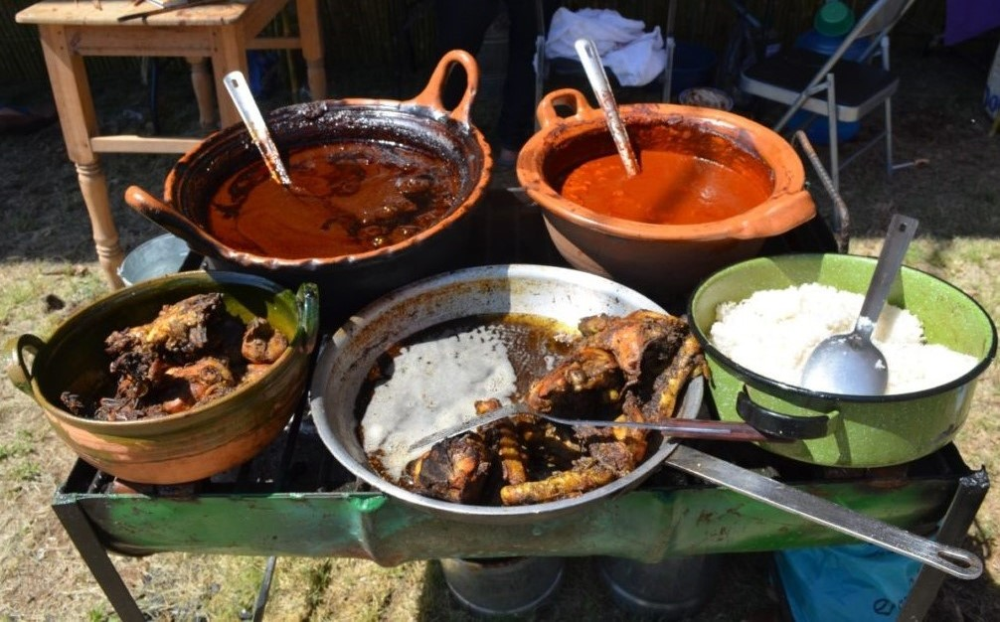

GASTRONOMÍA
En Santa Ana Zegache, se ofrece el mole negro o el coloradito; en las celebraciones también se prepara
la segueza, el amarillo o el verde.
Las bebidas que se acostumbran son téjate y la cilacayota,
ademas, tepache, chocolate y champurrado